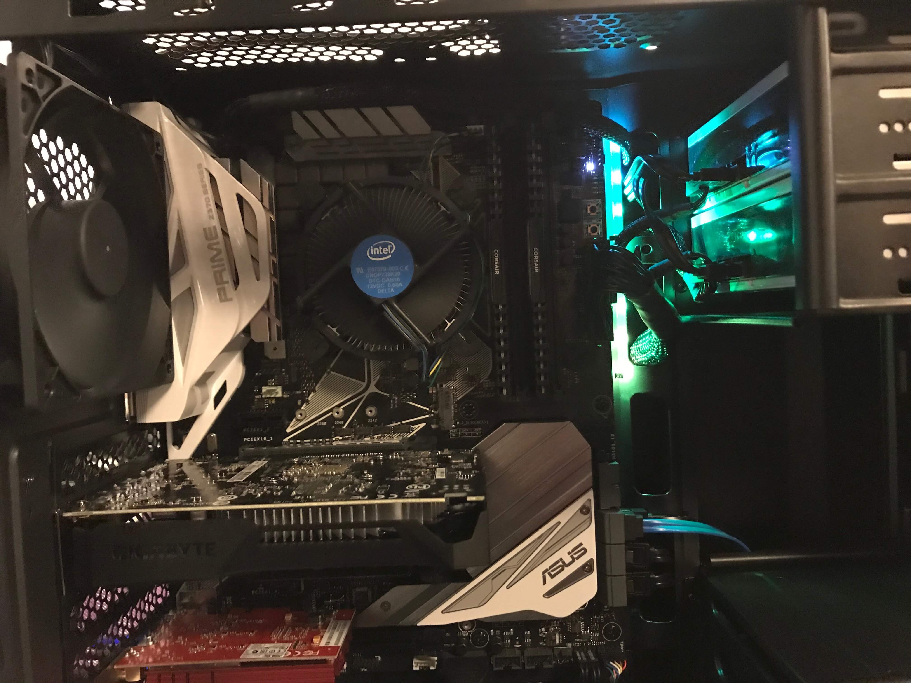

Objective
What is your job title at 25 and how are you going to get there?
Education
Andover High School- GPA: 3.7 unweighted
- Sports: basketball
- Graduation: June 2018
Photos
Community Service
At City Year, we’re working to bridge the gap in high-poverty communities between the support that students actually need, and what their schools are designed and resourced to provide. In doing so, we’re helping to increase graduation rates across the country, and changing the lives of the students we serve.